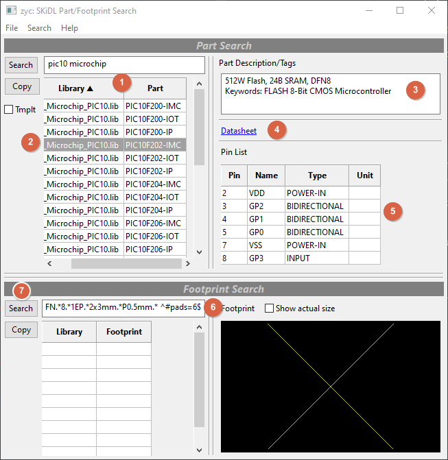
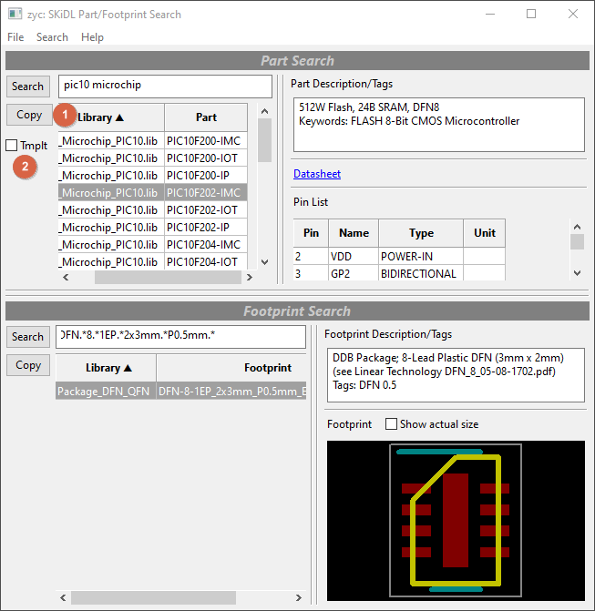

I created SKiDL to replace the manual tedium of drawing schematics with the advantages of modern programming languages: iteration, abstraction, hierarchy, and modularization. But one thing always stood out as a problem:
Parts.
Here's a snippet of SKiDL code to show what I mean. It instantiates a PIC10 microcontroller and connects it to some nets:
uc = Part(lib='MCU_Microchip_PIC10.lib',
name='PIC10F202-IMC',
footprint='Package_DFN_QFN:DFN-8-1EP_2x3mm_P0.5mm_EP0.61x2.2mm')
uc['vdd, vss'] += Net('VCC'), Net('GND')
uc['gp[0:3]'] += Bus('GP', 4)
OK, how did I know PIC10F202-IMC would call up the particular part I needed?
And how did I know it was in the MCU_Microchip_PIC10.lib library?
And how did I get the names of the I/O pins?
Obviously, all this information is available in KiCad, somewhere, but it's scattered around in various schematic symbol and PCB footprint libraries. First, you need to know which file contains the part you want and that's not always easy because some libraries are just a grab-bag of components someone threw together. Then you have to extract the part and I/O pin names from the file which is formatted for machines to read, not humans. Last but not least, you have to re-type all that stuff into your code.
Traditional schematic editors (like KiCad's EESCHEMA) have a number of tools that try to make this easier. First, there's a symbol chooser that let's you scroll through a list of available libraries and parts and select the one you need. To make the list of parts more manageable, a filter field can be used so only those parts containing a particular text string will show up.

Once you've selected a part, placing its symbol in the schematic will provide named pins where graphical signal nets can be attached. So that handles the I/O problem.
Finally, after your schematic is finished, there's a footprint assigner where you can select and assign a physical footprint to go with each part symbol.
 These integrated, schematic-based tools aren't available when using SKiDL.
A kludgy way to do something similar is to pull up the KiCad symbol editor and use it
to find parts and their I/O pin names, and then use the footprint editor to scroll through possible footprints
that are compatible. Then you have to extract the part, I/O, and footprint strings from these windows and type them
into your SKiDL code. As I said: kludgy.
These integrated, schematic-based tools aren't available when using SKiDL.
A kludgy way to do something similar is to pull up the KiCad symbol editor and use it
to find parts and their I/O pin names, and then use the footprint editor to scroll through possible footprints
that are compatible. Then you have to extract the part, I/O, and footprint strings from these windows and type them
into your SKiDL code. As I said: kludgy.
To make things easier, I created a simple command that runs in the Python interpreter and finds parts matching a string or regular expression. Here's an example of using it to find the microcontroller part discussed above:
>>> import skidl
>>> skidl.search('PIC10')
MCU_Microchip_PIC10.lib: PIC10F220-IMC (512W Flash, 24B SRAM, DFN8)
MCU_Microchip_PIC10.lib: PIC10F202-IOT (512W Flash, 24B SRAM, SOT-23-6)
MCU_Microchip_PIC10.lib: PIC10F202-IMC (512W Flash, 24B SRAM, DFN8)
...
MCU_Microchip_PIC10.lib: PIC10F222-IOT (512W Flash, 24B SRAM, SOT-23-6)
MCU_Microchip_PIC10.lib: PIC10F220-IP (512W Flash, 24B SRAM, PDIP8)
MCU_Microchip_PIC10.lib: PIC10F222-IP (512W Flash, 24B SRAM, PDIP8)
Then I added another command to display the device I/O pins for a specific part:
>>> skidl.show('mcu_microchip_pic10.lib', 'pic10f202-imc')
PIC10F200-IMC (PIC10F202-IMC): 512W Flash, 24B SRAM, DFN8
Pin None/2/VDD/POWER-IN
Pin None/3/GP2/BIDIRECTIONAL
Pin None/4/GP1/BIDIRECTIONAL
Pin None/5/GP0/BIDIRECTIONAL
Pin None/7/VSS/POWER-IN
Pin None/8/GP3/INPUT
These commands find the part library, name, and I/O, but you're still required to type all that back into your SKiDL code. And the problem of finding, choosing, and entering a footprint hasn't been addressed.
What was needed was a nice, light-weight tool combining both part and footprint selection capabilities
that delivered the result as text strings to enter into SKiDL code.
So I built it: zyc.
(If you prefer a video tour of zyc, then here it is.)

zyc has two, cooperating panes: a part is searched for and selected in the top pane, and then the
same is done for a footprint in the bottom pane. Then you can paste a SKiDL Part(...) instantiation
with the part and footprint into a code editing window.
To use zyc, start off by typing some search terms describing the part you want
into the upper text-entry box (1) and hit RETURN or click the Search button (2).

zyc will scan through all the available parts looking for your search terms in the library names and
the part names, aliases, descriptions, and keywords. (This initial search takes 20-30 seconds, but
any further searches are quick because the part data gets cached.)
The search terms can contain one or more text strings and/or regular expressions (REs).
Any matching parts are displayed in the Library/Part table (1).
Clicking on a row in the table (2) displays the part's description and keywords (3), datasheet hyperlink (4), and
I/O pin table (5) on the right-side of the pane.

Selecting a part also loads the footprint search text-entry box (6) with an initial set of search terms formed from
the part's list of recommended footprints plus the number of part pins.
You can edit these search terms and add more to modify the footprint search.
(Which is handy because, in this case, the number of pins is wrong since the pin list only contains
six entries but the actual number of pins is eight. So I'll just remove it.)
Then press the Search button (7) to scan through all the footprints for matching terms.
(As with parts, the initial footprint search takes 20-30 seconds but further searches are fast
because of caching.)
The footprints that match the search terms appear in the Library/Footprint table (1). In this case, there is only one. Selecting it makes the footprint description appear (2) as well as a drawing of the footprint (3). (If a hyperlink for the package datasheet was available, that would show up as well.)

to place a Part(...) instantiation on the clipboard.

Then you can go anywhere (such as your code editor) and paste the clipboard contents to get the part instantiation:
uc = Part(lib='MCU_Microchip_PIC10.lib', name='PIC10F202-IMC',
footprint='Package_DFN_QFN:DFN-8-1EP_2x3mm_P0.5mm_EP0.61x2.2mm')
If you check the Tmplt box (2) and then click the Copy button, a part template (instead of an instance)
gets placed on the clipboard and appears as follows:
uc = Part(lib='MCU_Microchip_PIC10.lib', name='PIC10F202-IMC', dest=TEMPLATE,
footprint='Package_DFN_QFN:DFN-8-1EP_2x3mm_P0.5mm_EP0.61x2.2mm')
To make it easier to connect the pins, zyc lets you select the names from the pin list column (1).
Right-clicking on the table copies whatever is selected to the clipboard.

Then the pin names can be pasted it into the code editor:
uc = Part(lib='MCU_Microchip_PIC10.lib', name='PIC10F202-IMC',
footprint='Package_DFN_QFN:DFN-8-1EP_2x3mm_P0.5mm_EP0.61x2.2mm')
"VDD",
"GP2",
"GP1",
"GP0",
"VSS",
"GP3"
Now you can use the strings to connect the microcontroller pins to various nets:
uc = Part(lib='MCU_Microchip_PIC10.lib', name='PIC10F202-IMC',
footprint='Package_DFN_QFN:DFN-8-1EP_2x3mm_P0.5mm_EP0.61x2.2mm')
uc["VDD", "VSS"] += Net('VCC'), Net('GND')
uc["GP0", "GP1", "GP2", "GP3"] += Bus('GP', 4)
zyc lets you double-click on any table column header to re-sort the table
based on the contents of that column.
This can be useful in grouping pins by their names, functions, or part units
before selecting and pasting them.
Using an FPGA as an example, double-clicking the Unit column (1)
orders the table so you can select all the I/O pins in one of its banks (2).

Then the pins can be pasted:
"IO_0_14",
"IO_0_15",
"IO_25_14",
"IO_25_15",
"IO_L1N_T0_AD0N_15",
"IO_L1N_T0_D01_DIN_14",
"IO_L1P_T0_AD0P_15",
"IO_L1P_T0_D00_MOSI_14",
"IO_L2N_T0_AD8N_15",
"IO_L2N_T0_D03_14",
"IO_L2P_T0_AD8P_15",
"IO_L2P_T0_D02_14",
"IO_L3N_T0_DQS_AD1N_15",
"IO_L3N_T0_DQS_EMCCLK_14",
"IO_L3P_T0_DQS_AD1P_15",
"IO_L3P_T0_DQS_PUDC_B_14",
"IO_L4N_T0_15",
"IO_L4N_T0_D05_14",
"IO_L4P_T0_15",
"IO_L4P_T0_D04_14",
"IO_L5N_T0_AD9N_15",
"IO_L5N_T0_D07_14",
"IO_L5P_T0_AD9P_15",
"IO_L5P_T0_D06_14",
"IO_L6N_T0_D08_VREF_14",
"IO_L6N_T0_VREF_15",
"IO_L6P_T0_15",
"IO_L6P_T0_FCS_B_14",
"IO_L7N_T1_AD2N_15",
"IO_L7N_T1_D10_14",
"IO_L7P_T1_AD2P_15",
"IO_L7P_T1_D09_14",
"IO_L8N_T1_AD10N_15",
"IO_L8N_T1_D12_14",
"IO_L8P_T1_AD10P_15",
"IO_L8P_T1_D11_14",
"IO_L9N_T1_DQS_AD3N_15",
"IO_L9N_T1_DQS_D13_14",
"IO_L9P_T1_DQS_14",
"IO_L9P_T1_DQS_AD3P_15",
"IO_L10N_T1_AD11N_15",
"IO_L10N_T1_D15_14",
"IO_L10P_T1_AD11P_15",
"IO_L10P_T1_D14_14",
"IO_L11N_T1_SRCC_14",
"IO_L11N_T1_SRCC_15",
"IO_L11P_T1_SRCC_14",
"IO_L11P_T1_SRCC_15",
"IO_L12N_T1_MRCC_14",
"IO_L12N_T1_MRCC_15",
"IO_L12P_T1_MRCC_14",
"IO_L12P_T1_MRCC_15",
"IO_L13N_T2_MRCC_14",
"IO_L13N_T2_MRCC_15",
"IO_L13P_T2_MRCC_14",
"IO_L13P_T2_MRCC_15",
"IO_L14N_T2_SRCC_14",
"IO_L14N_T2_SRCC_15",
"IO_L14P_T2_SRCC_14",
"IO_L14P_T2_SRCC_15",
"IO_L15N_T2_DQS_ADV_B_15",
"IO_L15N_T2_DQS_DOUT_CSO_B_14",
"IO_L15P_T2_DQS_15",
"IO_L15P_T2_DQS_RDWR_B_14",
"IO_L16N_T2_A15_D31_14",
"IO_L16N_T2_A27_15",
"IO_L16P_T2_A28_15",
"IO_L16P_T2_CSI_B_14",
"IO_L17N_T2_A13_D29_14",
"IO_L17N_T2_A25_15",
"IO_L17P_T2_A14_D30_14",
"IO_L17P_T2_A26_15",
"IO_L18N_T2_A11_D27_14",
"IO_L18N_T2_A23_15",
"IO_L18P_T2_A12_D28_14",
"IO_L18P_T2_A24_15",
"IO_L19N_T3_A09_D25_VREF_14",
"IO_L19N_T3_A21_VREF_15",
"IO_L19P_T3_A10_D26_14",
"IO_L19P_T3_A22_15",
"IO_L20N_T3_A07_D23_14",
"IO_L20N_T3_A19_15",
"IO_L20P_T3_A08_D24_14",
"IO_L20P_T3_A20_15",
"IO_L21N_T3_DQS_A06_D22_14",
"IO_L21N_T3_DQS_A18_15",
"IO_L21P_T3_DQS_14",
"IO_L21P_T3_DQS_15",
"IO_L22N_T3_A04_D20_14",
"IO_L22N_T3_A16_15",
"IO_L22P_T3_A05_D21_14",
"IO_L22P_T3_A17_15",
"IO_L23N_T3_A02_D18_14",
"IO_L23N_T3_FWE_B_15",
"IO_L23P_T3_A03_D19_14",
"IO_L23P_T3_FOE_B_15",
"IO_L24N_T3_A00_D16_14",
"IO_L24N_T3_RS0_15",
"IO_L24P_T3_A01_D17_14",
"IO_L24P_T3_RS1_15"
This is definitely something that would be difficult to type manually without making a mistake!
zyc requires minimal setup.
By default, it will use the KICAD_SYMBOL_DIR environment variable to look for part libraries,
and it will look for the global footprint library table (fp_lib_table) in the default location
where KiCad installs it on various OSes.
You can also add or change the directories that are searched for part libraries (1) or for
fp_lib_table files (2) using the menu items below:

It may happen that you change some part libraries or add more footprint files while zyc is
running. If so, you'll want to refresh the part and footprint caches (3).
If you want to try zyc, you can install it from the Github repo:
% pip install git+https://github.com/devbisme/skidl
To run it, just enter zyc at the command line.